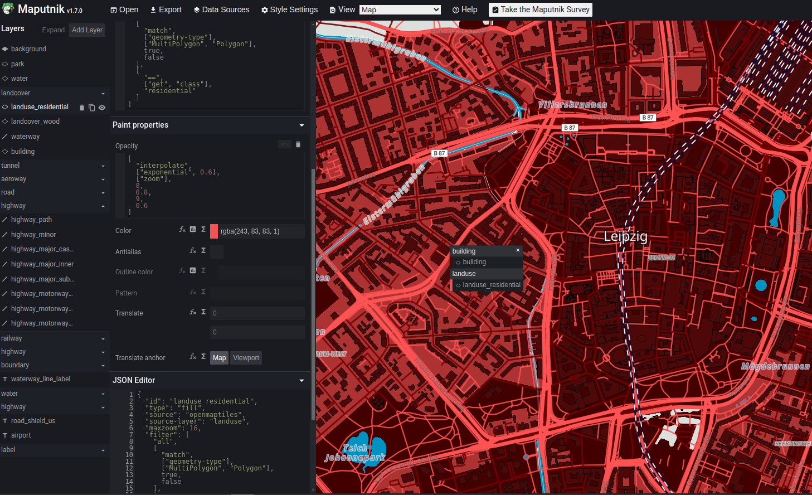

Create a ChaosMap
privacy fist
-
Map integration on website
-
custom styled map
-
display third party api data
-
without dataprotection layer!
- open-source
- no limits
- no registration, no API keys
- commercial usage allowed
- provide weekly full planet
<script src="https://unpkg.com/maplibre-gl/dist/maplibre-gl.js"></script>
<link href="https://unpkg.com/maplibre-gl/dist/maplibre-gl.css" rel="stylesheet" />
<div id="map" style="width: 100%; height: 500px"></div>
<script>
const map = new maplibregl.Map({
style: 'https://tiles.openfreemap.org/styles/liberty',
center: [12.377694794, 51.34326162],
zoom: 11,
container: 'map',
})
</script>

https://maputnik.github.io/editor?style=https://tiles.openfreemap.org/styles/positron
Maputnik
- load default style
- streets, labels, wood, buildings, water, ...
- visibility by zoomlevel, color, size, ...
- style by filter (e.g. name, zoom level)
- export nur style json file
const map = new maplibregl.Map({
style: './style.json',
center: [12.377694794, 51.34326162],
zoom: 11,
container: 'map',
})
actual state
- client request resources on diffrent servers
- third parties recive request, can send cookies, use server logging of IP, ...
- need dataprivacy layer on site
with proxy
- all requests to your server
- server request third pary resouces and deliver it to client
- no need dataprivacy layer on site
- can use cache
/proxy/index.php
use FalkM\Proxy\Proxy;
require_once('vendor/autoloader.php');
$config = ["proxies" => [
"tiles" => [
"url" => "https://tiles.openfreemap.org"
],
"maplibre-gl" => [
"url" => "https://unpkg.com/maplibre-gl@5.1.0"
]
]];
(new Proxy($config))->run();
<script src="./proxy/maplibre-gl/dist/maplibre-gl.js"></script>
<link href="./proxy/maplibre-gl/dist/maplibre-gl.css" rel="stylesheet" />
<div id="map" style="width: 100%; height: 500px"></div>
<script>
const map = new maplibregl.Map({
style: './proxy/tiles/styles/liberty',
center: [12.377694794, 51.34326162],
zoom: 11,
container: 'map',
})
</script>
add standard marker
new maplibregl.Marker({color: "#3FB1CE"})
.setLngLat([12.375019474, 51.34091034])
.setPopup(new maplibregl.Popup().setHTML("Hello World!
"))
.addTo(map);
more marker
const points = [
{
type: "Feature",
geometry: {
type: "Point",
coordinates: [12.396221, 51.3464008],
},
},
...
];
add source to map
map.addSource("points", {
type: "geojson",
data: {
type: "FeatureCollection",
features: points,
}
});
add custom marker from image
map
.loadImage("./marker.png")
.then((image) => map.addImage("custom-marker", image.data));
display points with custom marker
map.addLayer({
id: "symbols",
type: "symbol",
source: "points",
layout: {
"icon-image": "custom-marker",
"icon-size": 0.4
},
});
Space Api
- spaceapi.io
- information about hackerspaces, makerspaces, fablabs, chaostreffs
- status, url, name, address, projects, calendar, blog, ...
- SpaceAPI Schema
- Directory: list of URLs
{
"api_compatibility":[
"15"
],
"space":"Eigenbaukombinat Halle e.V.",
"logo":"https://eigenbaukombinat.de/ebklogo.png",
"url":"https://eigenbaukombinat.de",
"location":{
"address":"Landsberger Stra\u00dfe 3, 06112 Halle (Saale), Germany",
"lon":11.99221,
"lat":51.47996
},
"feeds":{
"calendar":{
"type":"ical",
"url":"https://kalender.eigenbaukombinat.de/public/public.ics"
},
"blog":{
"type":"rss",
"url":"https://eigenbaukombinat.de/index.xml"
}
},
"contact":{
"email":"kontakt@eigenbaukombinat.de",
"issue_mail":"kontakt@eigenbaukombinat.de"
},
"state":{
"open":false
},
"ext_ccc":"chaostreff",
"ext_habitat":"chaoszone"
}